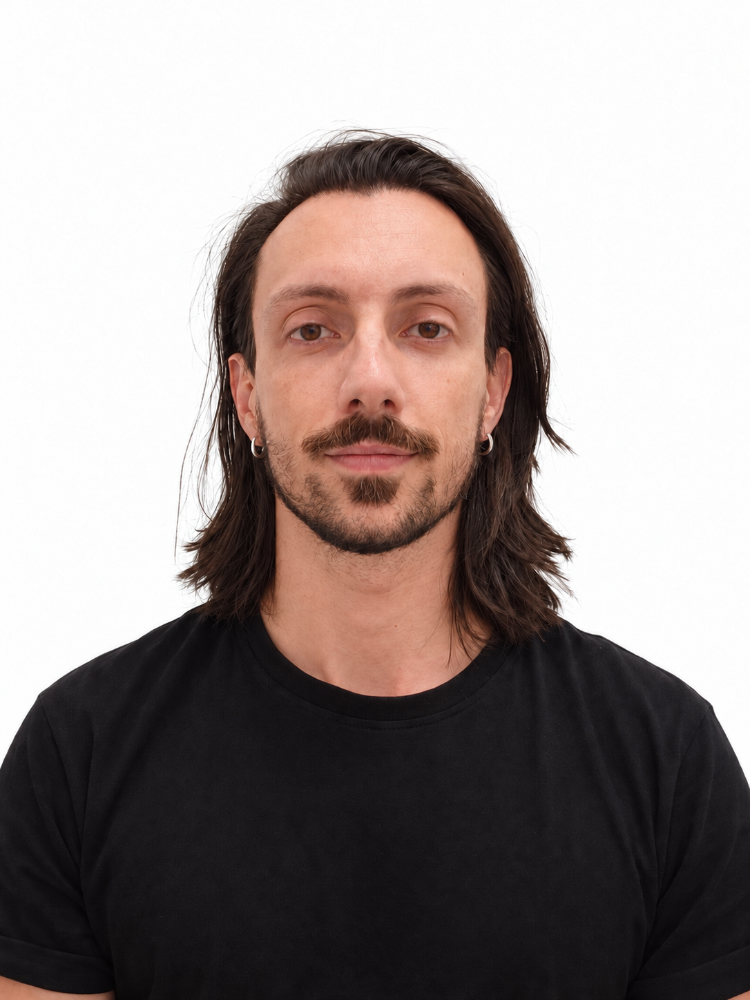

Matteo D'Uggento
Titolare REVER · Personal Trainer
Accompagna adulti e ragazzi in percorsi di allenamento individuali e di gruppo, adattati all'età e alla preparazione atletica. Alla pratica del training affianca la gestione dello studio e dei collaboratori, con attenzione all'ascolto e alla motivazione di ogni persona.
Desidera trasmettere ai nuovi professionisti le conoscenze e l’esperienza maturate nel tempo: per questo ha scelto di dedicarsi anche alla formazione dei personal trainer.
- Dal 2020 titolare di REVER Performance & Wellness a Milano, studio di personal training, osteopatia e nutrizione
- Laurea triennale in Scienze Motorie e dello Sport presso l’Università Cattolica del Sacro Cuore di Milano (2016)
- Esperienza nel fitness in GetFIT, come istruttore dal 2009 al 2010 e personal fitness trainer dal 2010 al 2016; successivamente personal fitness trainer presso Elite SPA & Wellness, dal 2016 al gennaio 2020
- Preparazione atletica, educazione posturale, stretching, Pancafit e allenamento funzionale, con esperienza anche nell’allenamento di bambini e adolescenti
- Operatore Pancafit e istruttore di nuoto di 1° livello; formazione extracurricolare in composizione corporea, arrampicata sportiva e programmazione dell’allenamento per soggetti sovrappeso
- Competenze di coaching sportivo, ascolto attivo e comunicazione per coinvolgere e motivare durante il percorso di allenamento